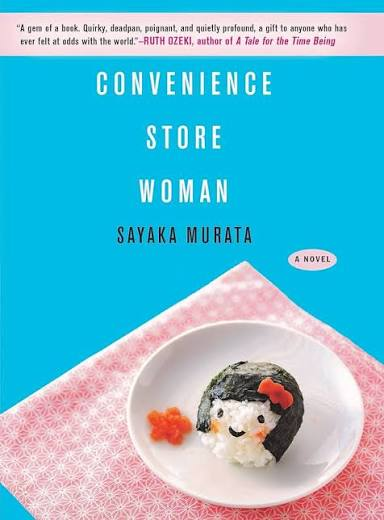

Convenience Store Woman is a deceptively simple book. At barely over 150 pages, it is an easy read, but author Sayaka Murata fills it with questions about the strange, often arbitrary expectations we place on what a “normal” life "should" look like.
Keiko, the novel's main character, is what makes the novel work so well. She has found genuine happiness and belonging while working in the rigid structure of a convenience store. However, everyone around her treats this as a problem that needs to be fixed. A better career, a relationship, marriage—there is always some next step she “should” be taking. The question the novel keeps returning to is a simple one: who actually decided any of this?
The ending is particularly satisfying. Keiko decides she does not need to transform herself or discover some greater ambition. Her victory is recognizing that she was already happy. There is something wonderfully defiant about a novel whose answer to society constantly demanding more is simply: what if this is enough?